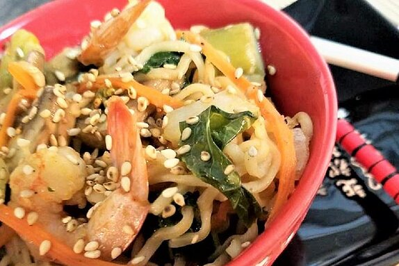

LASAGNA

Stir-fry Ramen Recipe recipe
Description
This is a great way to couple vegetables that must be used with ramen noodles. A quick and easy after-work meal bursting with flavor.
35 mins preparation time
Ingredients
sauce:
- ½ cup hoisin sauce
- ½ cup water
- 1 teaspoon white sugar
- ½ teaspoon grated fresh ginger
- ¼ teaspoon red pepper flakes
- kosher salt and freshly ground black pepper to taste
- 4 cups water
- 2 (3 ounce) packages ramen noodles (without flavor packet)
Stir-Fry:
- 2 teaspoons peanut oil
- 1 bunch asparagus, cut diagonally into 1-inch pieces
- 2 carrots, peeled and sliced diagonally
- ½ onion, sliced
- 3 cloves garlic, pressed
- 1 cup thinly sliced cooked chicken
- 2 cups sliced napa cabbage
- 1 cup sliced mushrooms
Steps
-
Whisk hoisin sauce, water, cornstarch, sugar, ginger, red pepper flakes, salt, and black pepper together in a bowl to make sauce.
-
Bring water to a boil in a large pot. Add ramen noodles. Cook, stirring occasionally, until tender, about 3 minutes. Drain.
-
Heat peanut oil in a nonstick skillet over medium-high heat. Add asparagus, carrots, onion, and garlic; saute until slightly tender, 3 to 5 minutes. Add chicken; toss until warmed through, about 2 minutes. Add cabbage and mushrooms. Pour in sauce; toss until coated. Reduce heat to low, cover, and cook until flavors combine, 3 to 5 minutes more.
-
Serve sauteed asparagus mixture over noodles.